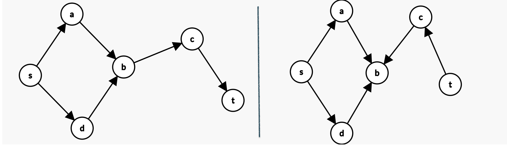
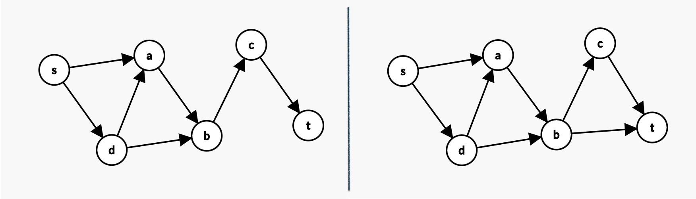
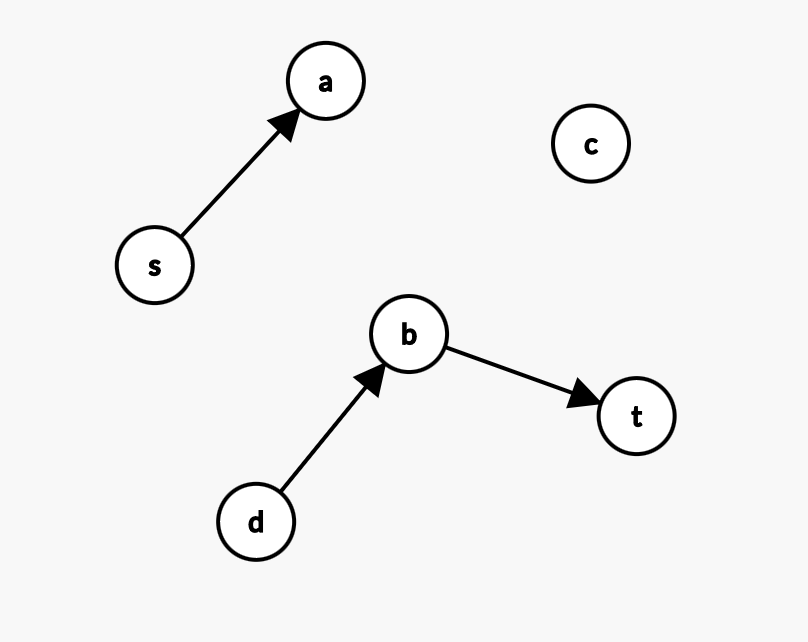
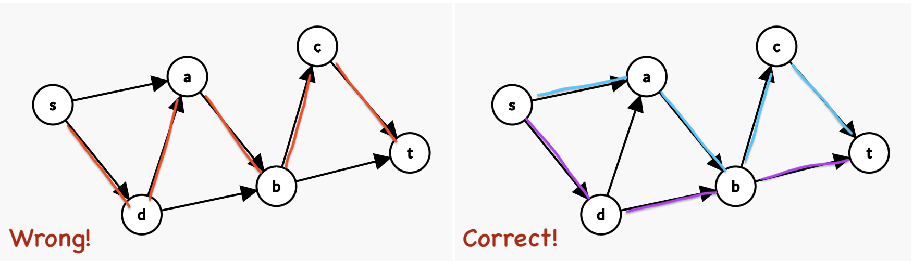
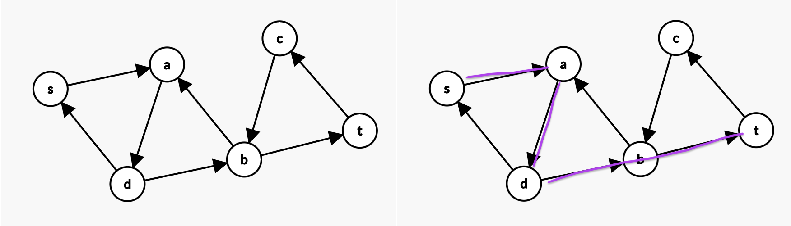
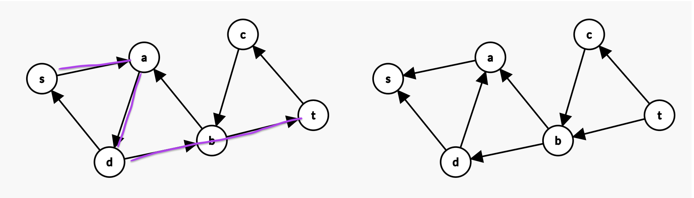
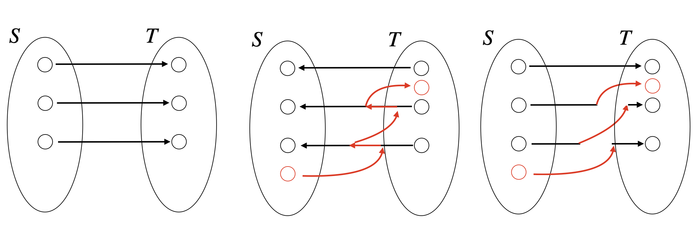
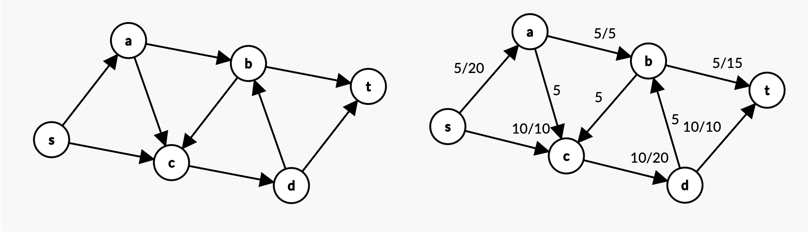
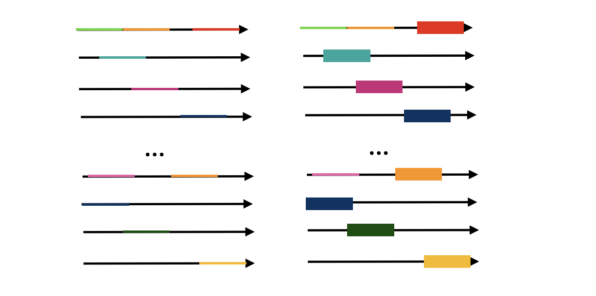
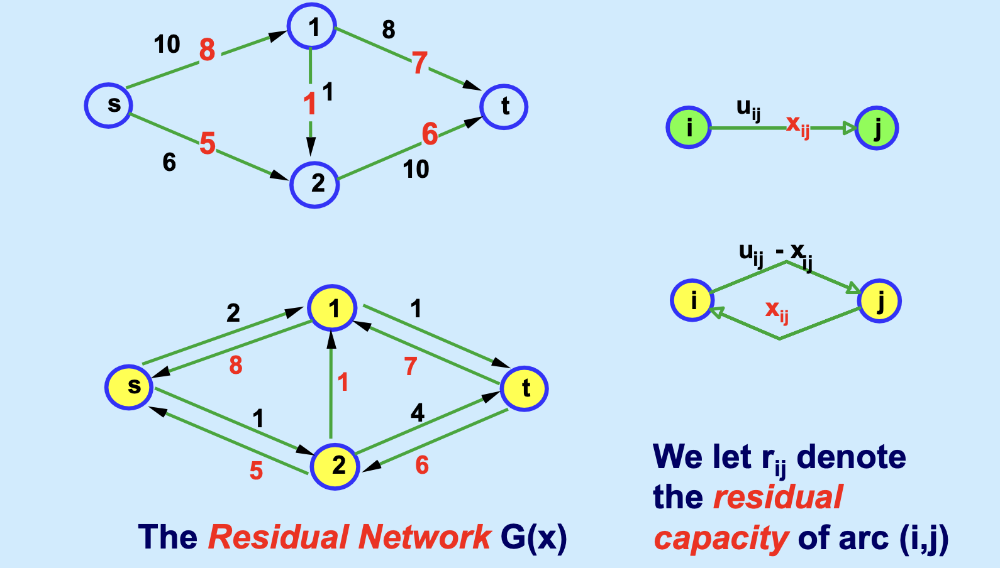

图论算法：最大流与最小割¶
照例，先上链接
- 首先强烈推荐 计算机系 jyy（yyds！）老师的B站教程。目前我所见的中文教程中，讲授最大流/最小割效果最好、信息含量足够大、信息密度足够高的。本篇笔记不过是对上述这个短短1h的授课视频的拙劣模仿。
- 笔记的第一个部分侧重于直觉，因此数学推导的部分不多，第二部分会从更加严谨的数学 + 算法角度进行展开。(20260315)
这个笔记会从几个部分展开。我很早以前就想写这部分内容了。没想到2024年都快结束了才堪堪开始。首先，你需要知道，最大流问题实际上可以认为是最小费用流的一个特例（可参考最小费用流的拓展。而最小费用流又可以视作一种线性规划问题的特例。我们会在后面简单讨论一下这个对偶问题的形式与含义）。
这是拟定的本笔记结构：
- 基础定义；以及从找路径到“割”；
- 如何从“找最多不重复路径”过渡到最大流；
- 为什么增广路径法在这个问题上是有效可行且正确的；
- 从最大流回归到线性规划
- 从线性规划回归到对偶，以及一种松弛的和紧凑的对偶形式；
现在我们开始。
S-T 割与路径存在的判定¶
通过深度优先搜索和广度优先搜索，我们可以在一个给定的图中找到从节点 \(s\) 到节点 \(t\) 的路径。我们简单标记一下。图 \(G = (V,E)\), 起点 s，终点 t。一条路径 \([s, p_1, p_2, p_3, ... , t]\)。
现在，我们考虑这样一个问题。我们知道如果 \(s,t\) 之间能够找到路径，那么一定可以被 DFS/BFS 找到，那如果不存在路径呢？我们怎么证明的确不存在一个从 \(s\) 到 \(t\) 的路径呢？
我们可以考虑如下的情况：

由瞪眼法。注意到，左图中，\(s\) 到 \(t\) 的路径是存在的，而右图中是不存在的。
我们可以下意识地想到一个笨方法。比如我们可以写出所有的从 \(s\) 到 \(t\) 的路径排列，而先不考虑路径中的边是否存在。比如：
\(s \rightarrow t\)
\(s \rightarrow a \rightarrow b \rightarrow t\)
\(s \rightarrow d \rightarrow c \rightarrow t\)
甚至 \(s \rightarrow d \rightarrow c \rightarrow a \rightarrow b \rightarrow t\)... 你可以想象出很多很多种排列。
如果存在一个路径，比如左图中的 \(s \rightarrow a \rightarrow b \rightarrow c \rightarrow t\)，你会发现这个路径中的每一个边都出现在图的边中。（比如, \(s \rightarrow a, a \rightarrow b, b \rightarrow c, c \rightarrow t\)，而如果在右图中，你会发现，任意一个排列中，都==至少有一个边不存在于原来的图中==。
但是，这个证明毫无疑问地太长了，我们不可能总是去求所有“边的排列”吧？
所以，我们需要回顾一下BFS，DFS实际上是在干什么。我们都是从起点出发，根据它能到达的点延伸“已访问到的节点”，这样不断地拓展节点集合，直到能访问到终点。Done！终止。
我们可以发现这里是有2个节点集合的，一个是“已访问到的”，一个是“没访问到的”。
现在，我们需要引入这部分一个非常重要的概念：有向图的 S-T 割。
S-T割：将图中所有节点分成两个集合\(S,T\)，其中起点 \(s\) 必须处于 \(S\) 集合中，终点 \(t\) 必须处于集合 \(T\) 中。这就是一个“割”。我们定义割的大小就是 \(S\) 中的点向 \(T\) 中节点的连边的个数。
举个例子，上面左图中令 \(S = \{s, a, b, d \}, T = \{ c, t \}\)。这就是一个割。诶，此时边 \(b \rightarrow c\) 就是唯一一个从 \(S\) 通向 \(T\) 中节点的连边。这个割的大小就是 1.
再举个例子，上面右图中，令 \(S = \{s, a, b, d \}, T = \{ c, t \}\)。这就是一个割。此时你会发现，找不到一个边从 \(S\) 通往 \(T\)了。这个割的大小是 0.
这个时候你或许能够回答一个问题：割的作用是什么。
你或许发现了，上述DFS/BFS找不到路径的割就是一个大小为0的割。
或者这样理解。我们再回到那个“笨办法”：列举所有的排列，由于\(S-T\)割把所有节点分成2部分，起点一定在\(S\)中，终点一定在\(T\)中。假设，s-t之间真的存在一个路径，那么对于这个路径中的每一条边，都肯定会发生一次“一个边的相邻节点，一个处在 \(S\)，一个处在 \(T\) 中”。
反过来，如果找到一个大小为0的割，就能说明这个路径不是通路了。因为它没法从你现在的 \(S\) 通到 \(T\) 中了，由于 T 中包含了终点t，你也就不可能抵达终点了。
总之，你可以用“割”来“证明路径是否存在”。你只要找到了一个大小为 0 的割，那么这两个点之间一定不存在路径。
最多有多少条不相交的路径？¶
现在我们进入下一个具体的问题。给定图和起终点后，我们想知道图中有多少不相交的从 \(s\) 到 \(t\) 的路径。
这里补充一下“不相交”的定义是什么：如果两条路径没有共同的边，那么就认为这两条路径是不相交的。
如下左图中。你可以发现，无论路径： \(s \rightarrow a \rightarrow b \rightarrow c \rightarrow t\) 还是 \(s \rightarrow d \rightarrow b \rightarrow c \rightarrow t\)，都需要经过 \(b \rightarrow c\) 这条边。所以这两条路径是相交的。只能找到一条不相交路径。这个 \(b \rightarrow c\) 就像是瓶颈(bottleneck)一样。

图2
反之，右图中，你可以找到 \(s \rightarrow a \rightarrow b \rightarrow c \rightarrow t\) 和 \(s \rightarrow a \rightarrow d \rightarrow b \rightarrow t\) 两条路径，是不重叠的。
好。这是个很小的图，如果说是个很大的图，找最大的不相交路径就显得有点太难了。我们不妨把这个最优化问题转化成一个“判定问题”。比如，我们想判断是否能找到 \(k\) 条从 \(s\) 到 \(t\) 的不相交路径呢？
上面我们判断能否找到从 \(s\) 到 \(t\) 的路径，其实就在解决 \(k = 1\) 的特殊情况。
如果 \(k = 2\) 呢？或者更大呢？
我们把目光转到“割”上来。你可以发现一个有意思的情况。
举个例子！
上面的图2的左图。我们能找到一个割 \(S = \{s, a, b, d \}, T = \{ c, t \}\)。这个割的大小是 1。此时，哪怕我们能在S集合中找到100种不同的路径，在T集合中也找到100个不同的路径，我终归只能通过 \(b\rightarrow c\) 这条边通往 \(T\) 集合中的点，就像一个独木桥！这个瓶颈（独木桥） 导致了，我最多只能找到1条不相交的路径。因为要想从\(S\)到\(T\)，都只有这一条路，如果有2条或者更多路径，那一定会重复使用 \(b\rightarrow c\) 的。
再举例子，上面的图2的右图。我们能随手找到一个割 \(S = \{s, a, b, d \}, T = \{ c, t \}\)。这个割的大小是 2。这导致，我最多只能找到2条不相交的从 \(s\) 到 \(t\) 的路径（至多2座独木桥）。因为在这个割下，统共只有2条边能从 \(S\) 中的点通到 \(T\) 中的点。我们顶多把这两条边全站满了！现在你再想增加一个路径，它势必要使用这两个边中的任意一个，如果用了，那它肯定和现有的2个路径之一是相交的了。 所以，至多只有2条路径。
这里还要补充一句，如果你随手找到了一个大小为 \(2\)，或者更大的割，不代表这个图就真的存在一个路径了！你可以参考图1的左图。我们的割 \(S = \{s\}, T = \{ a, b, d , c, t \}\) 的大小是2，但是这个图并不存在\(s-t\)路径！
所以，我们总结一下。如果我们随手找呀找，在图里找到一个大小为 \(l\) 的 S-T 割。那么至多只有 \(l\) 个不重复的路径。割的大小实际上提供了一个“上界”。我们先记住这个结论。
现在我们回到那个 “找不相交路径” 的问题上。
想一想，让你用手算来找不相交的路径，你会怎么做？
你一般会先找到一个路径，然后剔去这路径上所有的边，对残余的图继续寻找。也就是：
- 用DFS/BFS在 \(G(V,E)\) 中找到一条路径 \(P\)
如果找不到路径，结束！
- \(G \leftarrow (V, E \setminus P)\)，循环。
比如对于图二的右图：
我们一眼瞪出来： \(s \rightarrow a \rightarrow b \rightarrow c \rightarrow t\) 和 \(s \rightarrow a \rightarrow d \rightarrow b \rightarrow t\) 两条路径，是不重叠的。
但是如果我们一眼瞪出来了 \(s \rightarrow d \rightarrow a \rightarrow b \rightarrow c \rightarrow t\)，你堪堪把这些边删掉，你的残余网络就变成：

，图3
你就找不到第二条不相交路线了！
有没有一种办法总是能尽可能多地找到不相交路径，哪怕是我们选了“错”的路的情况下。也就是，我们希望从图4的左图（只有一个不相交路径），改成图4右图的情况呢？

图4
我们先说做法，最后会证明为什么这种做法是正确的纠错。
假设我们先选中了 \(s \rightarrow d \rightarrow a \rightarrow b \rightarrow c \rightarrow t\)。我们已经找到1个不相交路径了。我们此时把这个路径中所有的边全部反向。也就是图变成如下左图的情况：
现在，我们在这个变化过了的图里继续寻找，能不能从\(s\)到\(t\)。
很显然是能找到的，如下右图。这相当于我们多找到了1个不相交路径。也就是2条不相交路径了。

此时我们再把这次找到的这个路径的所有边反向，如下右图所示。

好了，这下彻底找不到可以从\(s\)到\(t\)的路径了。如果你注意力比较好，你会发现我们这么一番折腾，最开始找的那个“错”路径的 \(d \rightarrow a\) 被纠正回来了，变成了原来图中的样子，因为找到2个不相交路径的解中，并不需要这条多余的边。我们完成了纠错。
接下来是我最喜欢的一个环节。
我们想知道，为什么在反向后的残留网络上找到一个路径，就一定能找到一个新的不相交路径呢？

可以用上图进行可视化。证明完毕。
（还是解释一下吧）
我们一开始有\(k\) (图中\(k=3\)条路径)，从 \(s\) 到 \(t\)。现在我们通过反转原来的所有路径的边，成了第二个的情况，也就是中间的图。我们在这个图中，找到了一个新的路径。这个路径==可能经过某些反转后的边==（比如和黑线重叠的红线），也可能包含某些原先就有的、尚未被经过的边（比如不和黑线重叠的那部分红色的边），总之，就像中间这个图一样歪歪扭扭，但是毕竟找到了这样一条路径。
现在，我们把“经过的反转的那些边”擦除，仅仅保留没有经过的，但是又被反转了的边，这次给它扭正过来，我们绝对可以画出右图所示的这样一条路径。这就是为什么“如果在反向后的残留网络上能够找到一个路径，那么就一定能找到一个新的不相交路径。”
我太爱这个无字证明了。所以我一定要亲手把这个图画下来。
我第一次看jyy的讲解看到这部分的时候真的拍桌直呼：太牛了吧...
总结一下
上述操作的细节是：
- 对于已经走过的边，允许它们“推一段”回去；
- 对于没走过的边，允许继续走；
- 以此重新寻找路径；
这实际就是Ford-Fulkerson 算法最经典的“反转路径、形成增广路径(augmenting path)”操作。虽然我们目前还没有提到“最大流”。
我们可以用上面的方法，每次找到新路径就反转，直到不能再找到路径为止，这样一直操作，直到残余网络中找不到一个 \(s\) 到 \(t\) 的路径了，终止。
你可能会问，我们是否真的求的得了最大数量的不相交路径呢？
答案是肯定的。Proof:
假设最大不相交路径的数量为 \(k\)。现在我们找到了 \(m\) 条不同的路径，肯定有 \(m \leq k\)。此时，我们一定可以找到一个大小为 \(m\) 的割。为什么？
因为我们可以直接考虑这样一个割： \(S = \{ s\}\), \(T\) 为除了\(s\)外其他所有节点的集合。因为我们有 \(m\) 个不相交路径了，那么一定有 m 个不同的边从 \(s\) 流出，也就是从 \(S\) 流出到\(T\) 中。这就是一个大小为 \(m\)的割。
如果你还记得，割的大小决定了“不相交路径的上界”。 那么，我们一定有 \(k \leq m\)。
夹逼准则，两头堵！
于是：
\(m \leq k \leq m\)
所以我们这时候得到的路径数 \(m\)，就是我们想要找的那个 \(k\)。那个“最大数量的不相交路径”。
再换句话说，我们整个图里，所有的割中，最小割的大小，就是不相交路径的数量。
原始的线性规划形式及建模¶
现在，我们终于可以从“找不相交路径的最大数量”推广到“有权值的图”上来，就得到了最大流问题。
比如，如果我们假设，下图右图 中，从s到a点，权重是20，那么我们就看作这两个点之间有20条不同边，其权重都是1。以此类推。此时我们同样可以求从 \(s\) 到 \(t\) 的不相交路径的最大数量，依然是成立的。一个简单的例子如下。

我们可以把每个边的权重想象成“容量”，把每个路径流过这个边的权重想成“流量”，也就是有多少条流量可以经过这一条边，还不超过容量限制。如果说在加权图中，这个边的权重是20，那么最多有20条路径（更准确说，是20个大小的流量）可以流经这个边，如果权重是283.21，说明最多有283.21个大小的流量可以选择这个边。以此类推。
不妨写出所有从 s 到 t 的路径都写出来。比如：
\(P_1 = s \rightarrow a \rightarrow b \rightarrow t\)
\(P_2 = s \rightarrow c \rightarrow d \rightarrow t\)
\(P_3 = s \rightarrow c \rightarrow d \rightarrow b \rightarrow t\)
\(P_4 = s \rightarrow a \rightarrow c \rightarrow d \rightarrow b \rightarrow t\) ...
此时如果我们希望流量尽可能的大，其实也就是选择尽可能多的路径，同时不违背容量限制。
那么我们可以给每个路径设置一个流量。
比如，我们设 \(P_1\) 的流量为 \(x_1\)，以此类推。
\(\max x_1 + x_2 + ... + x_p\)，这里的 \(p\) 是所有的 \(s\) 到 \(t\) 的路径数。注意，这种建模方式中的路径数有指数多个，因此是一个很冗余繁琐的模型。但是它对于我们理解很有帮助。后面我们会提到更加紧凑的数学模型。
这里的约束 (1)，含义就是，所有包含了 \(s \rightarrow a\) 这条边的路径，其流量之和不能超过20。同理，约束 (2) 的含义就是，所有包含了 \(s \rightarrow c\) 这条边的路径，其流量之和不能超过10。以此类推。
上面也提到，决策变量有指数多个，很明显是很差劲的，但是为什么要专门提出来呢？因为这是网络流问题在优化语言描述下，最原始的形式。 它很基本、很原始地刻画了在容量限制下，对路径进行叠加，以找到尽可能多地从 \(s\) 到 \(t\) 的不相交路径 这样一个过程。
基于路径模型的完整形式
设 \(P\) 是从起点 \(s\) 到终点 \(t\) 的所有路径。\(x_i\) 是路径 \(i \in P\) 的流量。是一个连续型变量。我们用参数 \(a_{ik}\) 表示路径 \(i \in P\) 是否经过边 \(k\)，如果是，则为1，否则为0。记图中所有的边集合为 \(E\)，其中边 \(k\) 的容量限制是 \(c_k\)。那么，我们可以写出如下线性规划模型：
s.t.
现在，我们终于要回到运筹学课本上讲述的“网络流”的定义了。其实，那只不过是考虑了环流等更多情况下，该问题的一个简化（不再以路径为决策变量进行建模了）。
更加紧凑（经典）的网络流线性规划的建模¶
如果不再以路径为决策变量进行建模，而是直接关注“每个边究竟应该流多少流量”这个核心问题，我们该怎么建模呢？(这部分主要就是抄书了)
同样以上图中的网络为例。我们记边 \((i,j)\) 的流量为 \(x_{ij}\)。你首先需要观察到一个很重要很重要的性质：
流平衡
什么意思呢，就是除开了 \(s\) 和 \(t\) 之外，其他所有节点，其流入的流量一定等于流出的。为什么呢？因为，除了 \(s\) 和 \(t\) 之外，其他所有节点，都是中间节点，既不是起点，也不是终点，我们不会在中间节点有流量的损失（否则我们就一定可以通过把这个流量补上，找到一个更大的流了呀！），我们也不会在中间节点有流量的增加（中间节点不会平白无故生产流量！）。
具体而言，以 \(a\) 节点为例， \(x_{sa} = x_{ab} + x_{ac}\), 以c节点为例，\(x_{sc} + x_{ac} + x_{bc} = x_{cd}\)。以此类推。有多少个节点（除了起终点），就有多少个流平衡！
我们把完整的、基于网络流而不是基于路径的、紧凑的建模写在这里。
给定图 \(G = (V,E)\) 以及起点 \(s\)，终点 \(t\)。设 \(x_{ij}\) 是边 \((i,j) \in E\) 上的流量。是一个连续型变量。我们用集合 \(\Omega^+(i)\) 表示流入节点 \(i \in V\) 的节点集合，用集合 \(\Omega^-(i)\) 表示流出节点 \(i \in V\) 的节点集合。我们用 \(c(i,j)\) 表示边 \((i,j)\) 的容量。那么，我们可以写出如下线性规划模型：
s.t.
对上述两个线性规划的对偶问题的整理¶
做运筹相关整理，一直想对所有经典问题的对偶情况进行一些粗浅的分析。我们开始吧。
基于路径的LP的对偶¶
我们先讨论那个笨拙的、基于路径的线性规划问题。事实上，从这个笨拙的建模开始，比从那个精简后的线性规划模型入手，更容易理解最大流对偶的本质。
不言而喻地，对偶问题的决策变量是从原问题的约束条件入手的。 原问题的约束条件，对应的是每个边的容量限制。所以记图中有 \(|E|\) 条边，我们的对偶问题就有 \(|E|\) 个决策变量。记 \(y_k\)。如果你想具体一点，可以逐一罗列地写成：\(y_{sa}, y_{ab}, y_{bc}\) 等以此类推的形式。同样地，我们应该注意到，设原问题有 \(|M|\) 个决策变量，那么对偶问题就对应了 \(|M|\) 个约束条件。（注意这有指数多个约束，但是无妨，我们不会去解这个问题的）
Furthermore，原问题的每一个决策变量都对应了一个（对偶问题的）约束，因为这个决策变量是针对“某条路径”的，所以在对偶问题的语境下，这个约束也是针对“某条路径”而给出的，它的右端项始终为1。但是系数矩阵 ...
记得我们之前有 “用参数 \(a_{ik}\) 表示路径 \(i \in P\) 是否经过边 \(k\)”，那么在对偶语境下，倒过来，就是：边 \(k\) 是否被路径 \(i\) 所经过——其表示依然可以用 \(a_{ik}\) 这个参数！
我们先写好对偶问题的目标函数：\(\min \sum_{k \in E} c_k y_k\)。
我们再写约束条件：
防止理解不了这个约束，我还是拿上图的例子来讲：
对第一个路径 \(s \rightarrow a \rightarrow b \rightarrow t\)，我们写出来的第一个约束就是： \(y_{s,a} + y_{a,b} + y_{b,t} \geq 1\) 以此类推。别忘了, \(a\) 参数，不管下标如何，要么是0，要么是1.
那么回过头来看这个对偶问题，你做的事情实际上是，在每个边都已赋予一个权重的情况下，要求一个 \(y_k\)。我们假设令 \(y_k \in \{ 0, 1\}\)，就是要在所有的路径（路径反正是由边组成的，每个边有其权重）中，选一些边出来，使得选出来的边，其能够覆盖所有的路径（这也就是为什么，有路径个约束，同时约束是 \(\geq 1\)）的前提下，还能使得权重最小。
而，如果我们把 “覆盖所有的路径” 换一种思路来思考...一些边覆盖了所有的路径，不就意味着，拿掉这些边后，我们找到了一个种办法，分开了起点和终点 .... 不就是 ... 割？！！
当然了，严格来说，上面这个表达式，就是最小割问题的一个线性松弛 （因为我们 \(y_k\) 毕竟还是 continous的嘛.）针对这些细节的表述，你可以参考 这个链接 给出的数学证明。
如果你的直觉足够强，你可以想象成下图所示，左侧每个长线都表示一个从 \(s\) 到 \(t\) 的路径，因为它们由不同的边组成，所以每一段的权重各有不同（以不同颜色表示）。而我们的最终解就是下面右图所示的那样。

这些选出来的边，也就构成了一个最小的割。 这就是为什么，在本质上，最大流和最小割是互为对偶，又冥冥之中互有联系的原因。
基于紧凑的网络流模型的对偶¶
现在，是时候跳出上面基于路径的对偶，转而看一看我们精简后的，你最经常见到的网络流模型的对偶了。
在链接（上面已经给出过了） 中，我们知道，可以证明这个路径的建模方式与最大流的问题是完全等价的。某种意义上，我们可以得到一种启示，即，我们对网络流模型的建模，和上面给出的这个对偶，也有千丝万缕的关系。我们开始。
首先我们知道，对偶变量一定对应着原问题的某个约束，而网络流模型有2组约束：流平衡、容量约束。同时，我们知道，网络流的流平衡约束的数量，等于节点数 - 2 (因为头尾节点没有)；而网络流的容量约束的数量，等于图中边的数量。但，你同样应该注意到，对于流平衡约束，移项后，右端项是0，也就是这部分约束的对偶变量不会出现在对偶问题的目标函数中。
我们开始手撕。
我们定义对偶变量 \(y_{(u,v)}\)，也就是边 \((u,v)\) 在原问题的容量约束所对应的那个对偶变量；我们同样定义对偶变量 \(y_u\)，也就是节点 \(u\) 在原问题的流平衡约束所对应的那个对偶变量。
这个看起来确实很 Mysterious ... 因为看起来怪怪的。这是因为最大流里有容量约束导致的。
第一组，针对的是原问题中从起点出发的所有路径，也就是原问题决策变量的对应路径；
第二组，针对的是原问题中，所有不从起点出发，也不到达终点的路径；
第三组，针对的是原问题中，所有到达终点的路径；
至于为什么前面的系数矩阵有正有负，要写成这种形式（这似乎已经尽可能简洁了！）可以留作课后习题。提示一下，可以从节点-边关系矩阵入手。 原问题如果只看流平衡矩阵，行数就是节点数，列数就是边数。而一行中是可以有很多1，-1的，但是一列只有一个1和一个-1，分别表示出点和入点。
如果再把容量约束拴到这个矩阵下面，会发现，这个容量约束的矩阵好巧不巧哦，正好是个单位阵！太整齐了吧！（想象下，因为容量是要限制所有边的，所以 ... ）
这个“整齐”带来的后果是，转置到对偶问题的系数矩阵之后，每一行恰好一个。这也就解释了为什么，偏偏对偶问题的每一个约束都有一个 \(y_{s,v} / y_{u,v} / y_{u,t}\) 。知道了这一点，你可以试着把这几项先捂住不看，只看前面的，再来理解前面的正负关系，就容易多了。
（别忘了右端项！）
这部分拖了几乎一年，在2025.02.14终于完成了内容整合。不容易！
更加学院派的 Ford-Fulkerson 算法整理¶
以下是基于 MIT 讲义内容，为你现有的 Chapter7_2.md 笔记补充的严谨学院派分析部分。你可以直接将以下内容接在你原有笔记的末尾（即 Ford-Fulkerson 算法 标题之后）。
这部分内容侧重于形式化定义、算法伪代码、正确性证明逻辑以及复杂度分析，弥补了原有笔记在算法落地和理论严谨性上的不足。
Ford-Fulkerson 算法：形式化描述与复杂度分析¶
基于前文的直观理解，本节我们将给出 Ford-Fulkerson 算法，前置的残差网络理论、形式化定义、伪代码描述，并基于再次证明其正确性（最大流最小割定理）及有限性。同时分析其时间复杂度缺陷及改进方向。
The Residual Network¶
为了在算法过程中动态地寻找增广路径并允许“撤销”之前的流量决策，我们需要引入残差网络 (Residual Network) 的概念。
给定网络 \(G=(N, A)\)，容量 \(u_{ij}\)，当前可行流 \(x\)。对于每条弧 \((i, j) \in A\)，定义其残差容量 (Residual Capacity) \(r_{ij}\) 为：
残差网络 \(G(x)\) 是由所有 \(r_{ij} > 0\) 的弧组成的网络。 * 物理意义：\(r_{ij}\) 表示在弧 \((i, j)\) 上还能增加多少流量；后向弧的残差容量表示可以“退回”多少流量。下图，中黑色的部分就是前向弧，红色的，一方面代表当前可行流量，一方面也能标注后向弧的量（可以回退的）。

Augmenting Path Theorem¶
增广路径定理
一个可行流 \(x\) 是最大流，当且仅当残差网络 \(G(x)\) 中不存在从源点 \(s\) 到汇点 \(t\) 的有向路径（即增广路径）。
这个的直观证明见前一部分。
- 充分性：如果存在增广路径，我们可以沿该路径增加流量，故当前流不是最大流。
- 必要性：如果不存在增广路径，则当前流为最大流（证明见下文最大流最小割定理）。
Ford-Fulkerson Algorithm¶
基于增广路径定理，Ford-Fulkerson 算法通过不断寻找增广路径来迭代更新流。
Integrality Lemma
如果所有容量 \(u_{ij}\) 均为整数，则 Ford-Fulkerson 算法在每一步迭代中保持所有流量 \(x_{ij}\) 和残差容量 \(r_{ij}\) 为整数。
Trivial：初始时 \(x=0\) 为整数。每次增广量 \(\delta\) 是路径上残差容量的最小值，故 \(\delta\) 为整数。更新操作仅涉及整数加减，故整数性保持不变。
Finiteness
若容量均为有限整数，Ford-Fulkerson 算法必在有限步内终止。
- 证明：
- 由整数性引理，每次增广量 \(\delta \geq 1\)。
- 每次增广后，从源点 \(s\) 流出的总流量至少增加 1。
- 最大流值 \(v^*\) 有上界（例如所有出弧容量之和）。
- 因此，增广次数最多为 \(O(v^*)\) 或 \(O(nU)\)（其中 \(U\) 为最大容量）。
无理数容量的陷阱
如果容量为无理数，Ford-Fulkerson 算法可能无法终止，甚至收敛到错误的流值（参见 Lec 09 中的反例构造）。但在实际应用中容量通常为整数或有理数。
Max-Flow Min-Cut Theorem¶
这是网络流理论的核心对偶定理。
最大流最小割定理的严格证明
在任何网络中，从 \(s\) 到 \(t\) 的最大流值等于最小 \(s-t\) 割的容量。 $$ \max { v } = \min { CAP(S, T) } $$
设 \(x^*\) 为算法终止时的流（即无增广路径），\(S^* = \{ j : s \to j \text{ 在 } G(x^*) \text{ 中可达} \}\)，\(T^* = N \setminus S^*\)。
- 引理 1：对于任意流 \(x\) 和任意割 \((S, T)\)，流出 \(s\) 的净流量等于穿过割的净流量 \(F_x(S, T)\)。
- 证明：对 \(S \setminus \{s\}\) 中所有节点应用流量守恒约束求和即可得。
- 引理 2：对于任意流 \(x\) 和任意割 \((S, T)\)，\(F_x(S, T) \leq CAP(S, T)\)。
- 证明：\(F_x(S, T) = \sum_{i \in S, j \in T} x_{ij} - \sum_{i \in T, j \in S} x_{ji}\)。由于 \(x_{ij} \leq u_{ij}\) 且 \(x_{ji} \geq 0\)，故得证。
- 引理 3：对于算法终止时的流 \(x^*\) 和构造的割 \((S^*, T^*)\)，\(F_{x^*}(S^*, T^*) = CAP(S^*, T^*)\)。
- 证明：由于 \(G(x^*)\) 中不存在从 \(S^*\) 到 \(T^*\) 的弧（否则 \(T^*\) 中的点应属于 \(S^*\)），这意味着对于所有跨越割的弧 \((i, j)\)（\(i \in S^*, j \in T^*\)），必有 \(x_{ij} = u_{ij}\) 且 \(x_{ji} = 0\)。因此净流量等于容量。
综上：
又因为任意流 \(\leq\) 任意割，故 \(v^*\) 即为最大流，\((S^*, T^*)\) 即为最小割。
Complexity & Improvements¶
虽然 Ford-Fulkerson 算法逻辑简单，但其复杂度依赖于容量值 \(U\)，属于伪多项式时间 (Pseudo-polynomial time)。
| 算法变体 | 增广路径选择策略 | 增广次数上限 | 总时间复杂度 | 备注 |
|---|---|---|---|---|
| Ford-Fulkerson | 任意路径 (DFS) | \(O(nU)\) 或 \(O(v^*)\) | \(O(m \cdot v^*)\) | 容量大时效率极低 |
| Edmonds-Karp (Lec 10) | 最短增广路径 (BFS) | \(O(nm)\) | \(O(n^2 m)\) | 多项式时间，与容量无关 |
| Capacity Scaling (Lec 12) | 容量缩放 | \(O(m \log U)\) | \(O(nm \log U)\) | 适合大容量网络 |
| Preflow-Push (Lec 11) | 预流推进 (无路径) | - | \(O(n^2 m)\) 或 \(O(n^3)\) | 实际效率通常最高 |
Edmonds-Karp 算法：最短增广路¶
算法背景
Ford-Fulkerson 算法的最大缺陷在于增广路径的选择是任意的。如果选择不当（如 Lec 09 中的坏例子），算法可能需要指数次增广。Edmonds-Karp 算法 是 Ford-Fulkerson 算法的一种具体实现，它规定：每次始终选择残差网络中边数最少的增广路径（即最短路径）。
Edmonds-Karp 算法通过 BFS (广度优先搜索) 来寻找增广路径。 * 策略：在残差网络 \(G(x)\) 中，寻找从 \(s\) 到 \(t\) 的最短路径（以边数衡量距离）。 * 目的：保证距离标号单调不减，从而限制增广次数的上界，使算法在多项式时间内终止。
伪代码如下：
Edmonds-Karp 算法的关键在于证明其增广次数是有限的，且与容量值 \(U\) 无关。首先引入了 Distance Labels，便于在反向的时候能找到“最短路径”。
Distance Labels
定义 \(d(i)\) 为残差网络 \(G(x)\) 中从源点 \(s\) 到节点 \(i\) 的最短路径长度（边数）。 * 性质 1：对于残差网络中的任意弧 \((i, j)\)，满足 \(d(j) \leq d(i) + 1\)。 * 性质 2：增广路径 \(P\) 上的每一条弧 \((i, j)\) 都满足 \(d(j) = d(i) + 1\)（即都是“有效弧”）。
- 引理 1：距离标号单调不减
-
随着算法的进行，每个节点 \(i\) 的距离标号 \(d(i)\) 是非递减的。
- 证明思路：增广操作可能会引入反向边，但反向边 \((j, i)\) 的加入意味着 \(d(i) = d(j) + 1\)，这不会减少 \(s\) 到其他节点的最短距离。删除饱和边只会增加距离或保持不变。
- 引理 2：每条弧成为瓶颈的次数有限
-
每条弧 \((i, j)\) 成为增广路径上的瓶颈弧 (Critical Arc)（即被饱和的弧）的次数最多为 \(n/2\) 次。
- 证明思路：
- 当 \((i, j)\) 被饱和时，它在残差网络中消失，此时 \(d(j) = d(i) + 1\)。
- 要使 \((i, j)\) 再次出现在残差网络中，必须沿反向边 \((j, i)\) 推流，这要求 \(d(i) = d(j) + 1\)。
- 结合距离标号单调不减，再次饱和时 \(d(i)\) 至少增加了 2。
- 因为 \(d(i) < n\)，所以每条弧最多饱和 \(n/2\) 次。
- 证明思路：
Edmonds-Karp 复杂度定理
- 增广次数：最多为 \(O(nm)\) 次。（共有 \(m\) 条弧，每条弧最多成为瓶颈 \(n/2\) 次，每次增广至少饱和一条弧）。
- 时间复杂度：每次 BFS 耗时 \(O(m)\)，总时间为 \(O(nm^2)\)。通常文献记为 \(O(VE^2)\)）。
最大容量增广路 (Largest Augmenting Path)
除了最短路径策略，Edmonds-Karp 在其原始论文中也分析了最大容量增广路策略。
- 策略：每次选择残差容量最大的增广路径。
- 实现：可通过修改 Dijkstra 算法或二分搜索容量阈值实现。
- 复杂度：增广次数为 \(O(m \log U)\)，总时间复杂度 \(O(m^2 \log m \log U)\)。
- 对比：虽然依赖容量 \(U\)，但在某些大容量稀疏图中可能表现良好，但最短增广路 (BFS) 是更严格的多项式时间算法。
| 特性 | Ford-Fulkerson (DFS/任意) | Edmonds-Karp (BFS/最短) |
|---|---|---|
| 增广路选择 | 任意路径 | 边数最少的路径 (BFS) |
| 增广次数 | \(O(v^*)\) (依赖容量，可能指数级) | \(O(nm)\) (多项式级) |
| 总复杂度 | \(O(m \cdot v^*)\) | \(O(nm^2)\) |
| 适用场景 | 小容量整数网络 | 一般网络，理论保证更强 |
| 核心证明工具 | 整数性引理 | 距离标号单调性、瓶颈弧分析 |
Preflow-Push¶
算法范式转变
不同于增广路径算法（如 Ford-Fulkerson, Edmonds-Karp）始终维护可行流（Flow）（即除源汇外所有节点流量守恒），预流推进算法（Preflow-Push）在中间过程维护预流（Preflow）。
- 核心放松：允许中间节点存在超额流量 (Excess)，即流入量 \(\ge\) 流出量。
- 推进机制：通过局部操作（Push/Relabel）将超额流量逐步推向汇点，直到所有中间节点超额量为 0，预流变为可行流。
- 优势：无需寻找全局增广路径，适合并行计算及大规模稀疏图。
预流 (Preflow)：一个函数 \(x: A \to \mathbb{R}\) 称为预流，如果满足：
- 容量约束：\(0 \leq x_{ij} \leq u_{ij}, \forall (i, j) \in E\)
- 超额非负：对于所有中间节点 \(i \in V \setminus \{s, t\}\)，其超额流量 \(e(i)\) 满足：
- 物理意义：中间节点可以“暂时存储”流量，不要求即时守恒。源点 \(s\) 可以有净流出，汇点 \(t\) 可以有净流入。
Distance Labels
为了指导流量向汇点推进，算法维护一个距离标号函数 \(d: N \to \mathbb{Z}_{\geq 0}\)。
有效距离标号 (Valid Distance Labels)
对于残差网络 \(G(x)\)，距离标号 \(d\) 是有效的，如果满足：
- \(d(t) = 0\)
- 对于所有残差弧 \((i, j) \in G(x)\)，满足 \(d(i) \leq d(j) + 1\)
若 \(d\) 是有效标号，则 \(d(i)\) 是残差网络中节点 \(i\) 到汇点 \(t\) 的最短路径长度的下界。 * 推论：若 \(d(i) \geq n\)，则残差网络中不存在从 \(i\) 到 \(t\) 的路径。
残差网络中的弧 \((i, j)\) 称为容许弧，如果：
- 残差容量 \(r_{ij} > 0\)
-
满足 tight 约束：\(d(i) = d(j) + 1\)
-
意义：流量只能沿着距离标号严格递减 1 的方向推进（即“下坡”）。
算法通过两种基本操作来消除超额流量：
1) 推进操作 (Push)¶
Push(i, j)
若节点 \(i\) 是活跃节点（\(e(i) > 0\)）且存在容许弧 \((i, j)\)：
- 推进量：\(\delta = \min \{ e(i), r_{ij} \}\)
- 更新：
- \(x_{ij} \leftarrow x_{ij} + \delta\)
- \(e(i) \leftarrow e(i) - \delta\)
- \(e(j) \leftarrow e(j) + \delta\)
- 更新残差容量 \(r_{ij}, r_{ji}\)
- 分类：
- 饱和推进 (Saturating Push)：若 \(\delta = r_{ij}\)，弧 \((i, j)\) 被饱和，从残差网络消失。
- 非饱和推进 (Non-saturating Push)：若 \(\delta = e(i) < r_{ij}\)，节点 \(i\) 不再活跃。
2) 重标号操作 (Relabel)¶
Relabel(i)
若节点 \(i\) 是活跃节点（\(e(i) > 0\)）但不存在容许弧：
- 操作：升高 \(i\) 的标号，使其能够向邻居推流。
- 更新：\(d(i) \leftarrow \min \{ d(j) + 1 : (i, j) \in A, r_{ij} > 0 \}\)
- 性质：重标号后，至少产生一条新的容许弧。\(d(i)\) 单调不减。
分析概要：
- Relabel 操作：每个节点最多重标号 \(2n\) 次，总时间 \(O(nm)\)。
- 饱和推进 (Saturating Pushes)：每条弧最多饱和 \(O(n)\) 次，总次数 \(O(nm)\)。
- 非饱和推进 (Non-saturating Pushes)：这是瓶颈。
- 势函数：\(\Phi = \sum_{i \in Active} d(i)\)。
- 变化分析：
- 每次非饱和推进，\(\Phi\) 至少减少 1（活跃节点 \(i\) 消失或 \(d(i)\) 减小）。
- Relabel 和饱和推进会增加 \(\Phi\)，但总增加量受限（\(O(n^2 m)\)）。
- 结论：非饱和推进总次数为 \(O(n^2 m)\)。
Advanced Variants¶
为了进一步降低复杂度， 有两种基于缩放 (Scaling) 和启发式选择的改进。
| 算法变体 | 策略 | 非饱和推进次数 | 总复杂度 | 备注 |
|---|---|---|---|---|
| Generic Preflow-Push | 任意活跃节点 | \(O(n^2 m)\) | \(O(n^2 m)\) | 基础版本 |
| Highest Level Pushing | 选 \(d(i)\) 最大的活跃节点 | \(O(n^2 \sqrt{m})\) | \(O(n^2 \sqrt{m})\) | 理论最优之一 |
| Excess Scaling | 限制超额量 \(\Delta\) 缩放 | \(O(n^2 \log U)\) | \(O(nm + n^2 \log U)\) | 适合大容量图 |
最高标号预流推进 (Highest Level Pushing)
策略
每次选择距离标号 \(d(i)\) 最大的活跃节点进行推进。 * 复杂度：\(O(n^2 \sqrt{m})\)。 * 分析工具：更复杂的势函数 \(\Phi = \sum_{j} (\text{active nodes } i \text{ with } d(i) \geq d(j))\)。 * 阶段分析：将操作分为“阶段 (Phases)"，每个阶段内最高标号不变。
超额缩放算法 (Excess Scaling Algorithm)
策略
引入参数 \(\Delta\)，仅处理超额量 \(e(i) \geq \Delta/2\) 的节点。 * 流程：初始 \(\Delta\) 为大容量，逐步减半 (\(\Delta \leftarrow \Delta/2\))。 * 复杂度：\(O(nm + n^2 \log U)\)。 * 优势：避免了小流量多次推进，类似容量缩放思想。
没问题，将之前的三个表格合并为一个综合对比总表是一个非常好的主意。这样可以一目了然地看到所有算法的演进路线、复杂度差异以及适用场景。
以下是为你整理的最大流算法综合对比总表，建议放在笔记的最后部分作为总结。
总结¶
涵盖了从基础 Ford-Fulkerson 到高级预流推进算法的核心对比。
| 算法家族 | 算法名称 | 核心策略 | 维护状态 | 关键操作 | 操作次数界限 | 总时间复杂度 | 证明工具/备注 |
|---|---|---|---|---|---|---|---|
| 增广路径法 (Augmenting Path) |
Ford-Fulkerson (Lec 09) |
任意增广路径 (DFS/任意) |
可行流 (Flow) |
寻找路径 增广 (Augment) |
增广次数： \(O(v^*)\) 或 \(O(nU)\) |
\(O(m \cdot v^*)\) | 整数性引理。 容量为无理数时可能不收敛；适合小容量整数网络。 |
| ^ | Edmonds-Karp (Lec 10) |
最短增广路径 (BFS) |
可行流 (Flow) |
寻找最短路径 增广 (Augment) |
增广次数： \(O(nm)\) |
\(O(n^2 m)\) | 距离标号单调性。 多项式时间保证，与容量无关；适合一般网络。 |
| ^ | Capacity Scaling (Lec 12) |
容量缩放 (只选容量 \(\ge \Delta\) 的路径) |
可行流 (Flow) |
寻找 \(\Delta\)-路径 增广 (Augment) |
增广次数： \(O(m \log U)\) |
\(O(nm \log U)\) | 几何收敛性。 适合大容量网络；避免小流量多次增广。 |
| 预流推进法 (Preflow-Push) |
Generic Preflow-Push (Lec 11) |
任意活跃节点 (Active Node) |
预流 (Preflow) |
推进 (Push) 重标号 (Relabel) |
非饱和推进： \(O(n^2 m)\) |
\(O(n^2 m)\) | 势函数 \(\Phi=\sum d(i)\)。 基础版本；理论分析基准；局部操作。 |
| ^ | Highest Level Pushing (Lec 12) |
选 \(d(i)\) 最大的活跃节点 | 预流 (Preflow) |
推进 (Push) 重标号 (Relabel) |
非饱和推进： \(O(n^2 \sqrt{m})\) |
\(O(n^2 \sqrt{m})\) | 阶段分析 (Phases)。 理论最优之一；实际效率极高；适合大规模图。 |
| ^ | Excess Scaling (Lec 12) |
限制超额量 \(\Delta\) 缩放 | 预流 (Preflow) |
推进 (Push) 重标号 (Relabel) |
非饱和推进： \(O(n^2 \log U)\) |
\(O(nm + n^2 \log U)\) | 势函数 \(\Phi=\sum e(i)d(i)/\Delta\)。 结合缩放与推进；适合大容量网络。 |
符号说明
- \(n\): 节点数 (Nodes)
- \(m\): 弧数 (Arcs)
- \(U\): 最大容量 (Max Capacity)
- \(v^*\): 最大流值 (Max Flow Value)